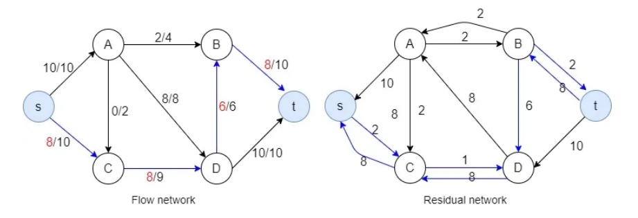

The Ford Fulkerson method, also known as ‘augmenting path algorithm’ is an effective approach to solve the maximum flow problem. The Ford Fulkerson method depends on two main concepts and they are, Residual Network and Augmenting paths.
The phone's network interface (Wi-Fi or mobile data) as a water tank with limited outflow capacity. Every app is a pipe trying to get water. Some apps need more (YouTube), some less (WhatsApp messages), and others shouldn't get any at all background app updates Ford-Fulkerson's principle, Android must distribute this limited flow data bandwidth efficiently. The system has to prioritize based on importance user usage, foreground vs. background. It limits or blocks apps with lower priority by cutting off their "flow path".
Android models apps/services as nodes in a network flow graph. Assigns bandwidth limits as edge capacities. Uses flow control (conceptually similar to Ford-Fulkerson) to Allow full flow to critical paths e.g., YouTube in foreground. Reduce or stop flow to others (e.g., Google Photos backup in background). Ensures maximum useful data throughput within user-imposed constraints (like mobile data cap).
The Ford–Fulkerson algorithm finds the maximum flow in a flow network. When capacities are integers, the time complexity depends on the number of edges and the maximum flow value. Below is a comparison between Ford-Fulkerson and its improved version, Edmonds–Karp.
| Algorithm | Time Complexity | Notes |
|---|---|---|
| Ford–Fulkerson | O(E × f) | Where E = number of edges, f = max flow value. May not terminate for irrational capacities. |
Exponential Backoff is a network congestion control algorithm that progressively increases the wait time between retries after a failure (like a collision or no acknowledgment). It is most famously used in Ethernet (CSMA/CD) and wireless protocols (WiFi, Bluetooth, LTE).
Exponential Backoff in action: delay increases after each failed attempt
When the device fails to transmit due to collision or no ACK it waits for the random amount of time before retrying, if it fails again then, it doubles the maximum wait time window and picks another random value within it. And this continues up to the maximum retry limit. This algorithm can also be applied for the processes that are running on Android and can be used for the deadlock prevention in if we know well in advance the process and its maximum resource needs.
Backoff Time = random(0, 2ⁿ - 1) × SlotTime Where n is the number of retries (usually capped), and SlotTime is a fixed unit of delay.
| Phase | Backoff Range | Time Complexity | Notes |
|---|---|---|---|
| n-th Retry | 0 to 2ⁿ − 1 | O(2ⁿ) | Each retry doubles the max wait slots. Prevents network congestion. |
| Worst Case (Max Retries) | 0 to 2^k − 1 | O(2ᵏ) | k is the retry limit. Exponential delay prevents retry storms. |